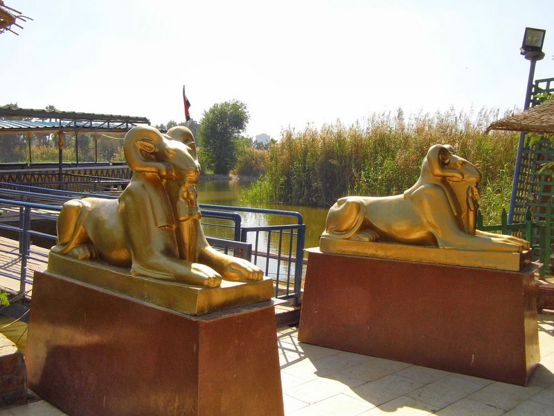
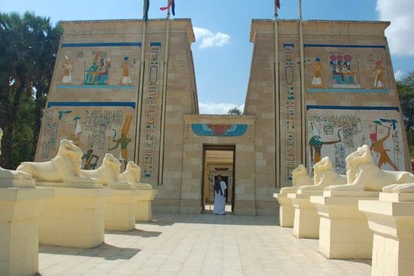
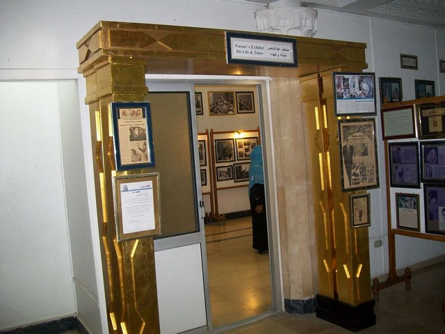
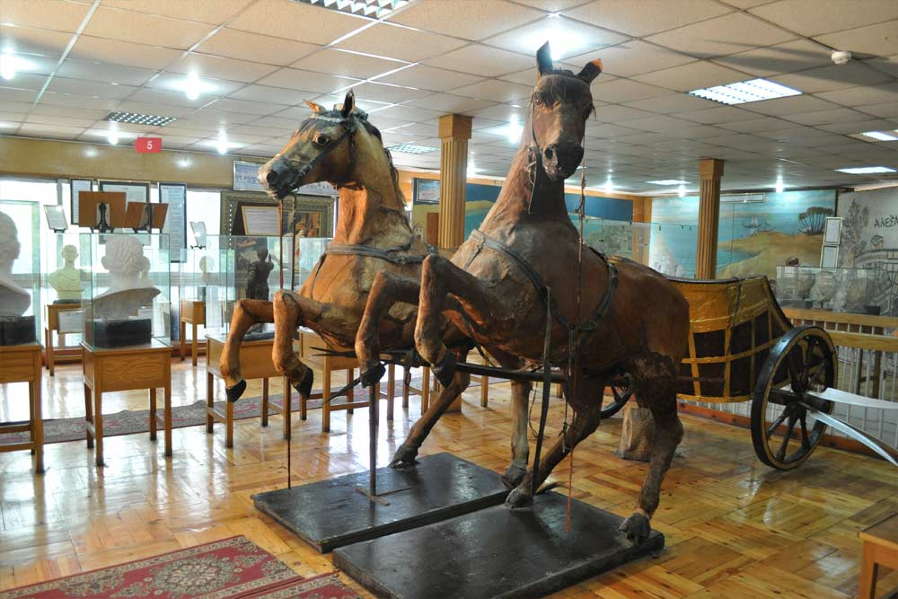
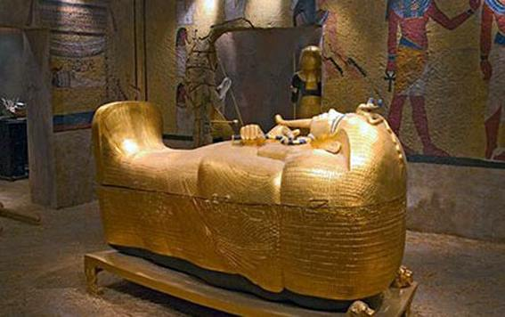
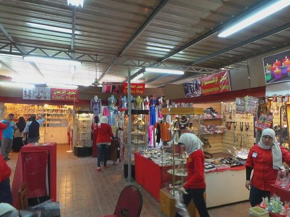

تعتبر القرية الفرعونية pharonic village من افضل الاماكن السياحية في القاهرة مصر فهي مكان مثالي للتعرف على التاريخ المصري وحضارة الفراعنة واكتشاف انماط الحياة التي كانت سائدة في تلك العصور. تحاكي القرية الفرعونية قرى قديمة للفراعنة كانت حاضرة منذ آلاف السنين حيث تستطيع التعرف على محتوياتها ومعالمها ومبانيها وحتى شخصياتها، ننصحكم بزيارة القرية الفرعونية عند السياحة في القاهرة

أنشئ القرية الفرعونية في مدينة القاهرة المعماري المصري حسن رجب وقد جائته تلك الفكرة عند زيارته لامريكا ورؤيته لقرية ويليامزبيرغ في فيرجينيا التي تحكي حياة المستوطنين الاوائل للولايات المتحدة ووقع اختياره على جزيرة يعقوب كمكان للقرية الفرعونية
وبدأ العمل فيها في عام 1977 وغرس 5000 شجرة من الاشجار التي تتميز بها مصر الفرعونية وجرى حفر الممرات والقنوات المائية
وشيئاً فشيئاً تحقق الحلم وفتحت هذه القرية المتكاملة في عام 1984 ستجد في القرية الفرعونية اشهر معابد ملوك الفراعنة
وحياة المصري القديم البسيطة بين الزراعة والصيد وتحنيط الموتى والكتابة على الورق
وتعتبر القرية الفرعونية من افضل الاماكن السياحية في القاهرة ومن ضمن افضل اماكن السياحة في مصر ايضاً
أفضل الأنشطة التي في القرية الفرعونية بالجيزة
تبدأ رحلتكم بدخول القرية وشراء التذاكر من شباك التذاكر على البوابة، ثم ركوبكم في عوامة الاستقبال وتحتوي على كافيتريا صغيرة لاستقبال الزوار ومعرض لبعض المنتجات الأثرية والفرعونية
في الطابق الأعلى من عوامة الاستقبال هناك متحف كليوباترا ويشرح لكم المرشد السياحي عن فترة حكم كليوباترا ويوليوس قيصر ،والصراع الذي دار في تلك الفترة

يمكنكم الانتقال داخل المركب العائم في القنوات المائية المحيطة بالقرية الفرعونية
والتعرف على الآلهة عند المصريين القدماء ومشهد عن النبي موسى ومعلومات عن نبات البردي وطرق تصنيعه وتحويله الى ورق
ونبذة عن طرق التحنيط والفخار والزجاج والاسلحة ومعلومات عن طرق الزراعة والري والصيد عند الفراعنة
وطرق الرسم والكتابة الهيروغليفية كل تلك المعلومات تسمعها وتشاهد مشاهد تمثيلية تحاكي الماضي ،لتقريب الصورة ومحاكاة المصريين القدماء وكل تفاصيل حياتهم
المتاحف التي يمكنكم زيارتها في القرية الفرعونية بالقاهرة
بعد الرحلة بالمركب العائم يمكنكم مشاهدة المتاحف في القرية الفرعونية ،هي المتاحف المختلفة التي تتناول كل تاريخ مصر القديم والحديث
حيث يمكنكم زيارة المتحف الطلمي ومتحف التراث، ومتحف المراكب والمتحف الاسلامي والمتحف القبطي ومتحف الاهرامات، ومتحف مصر، وكل منهم يتناول حقبة تاريخية ومدعم بالصور والماكينات المصغرة لأهم الاحداث

يمكنكم زيارة متحف الرئيس جمال عبد الناصر الذي يحتوي على 170 صورة للرئيس الراحل في مراحل حياته المختلفة كما يضم عدداً كبيراً من مقتنياته الشخصية وتمثالين نصفيين وبعض العملات والطوابع التي صدرت بتلك الفترة
اضافة للرسائل التي كتبها، بالاضافة الى نص قرار تأميم قناة السويس وخطاب التنحي الذي ألقاه في عام 1956

يمكنكم ايضاً زيارة متحف الرئيس السابق انور السادات الذي يحتوي مجموعة كبيرة من مقتنياته الشخصية والصور وبعض المقتنيات الخاصة التي قامت جيهان السادات باهدائها للمتحف مثل بدلته البحرية التي حضر بها افتتاح القناة

كما يمكنكم زيارة متحف التحنيط ويحتوي على بعض نماذج لعملية التحنيط وأهم الآلهة المرتبطة بفكرة التحنيط
ومتحف الأهرامات ويمثل فكرة بناء الهرم وأهم الأدوات المستخدمة في بناءه والمسلات
يمكنكم زيارة مقبرة غنخ امون حيث قامت القرية ببناء نموذج للمقبرة الاساسية وبنفس الحجم والتصميم وكذلك نماذج لجميع القطع الأثرية التي تم اكتشافها
ويوجد بالمقبرة اربع غرف الاولى فيها ثلاثة اسرة مغطاة بالذهب والعديد من متعلقات الملك مثل كرسي العرش والغرفة الثانية صندوق للاسلحة واواني فخارية
اما الثالثة هي غرفة الدفن التي تم فيها اكتشاف المومياء في تابوت يزن 110 كغ من الذهب الخالص والغرفة الرابعة فيها كنوز الملك

يمكنكم زيارة الاماكن المخصصة للالعاب وذلك لترفيه الاطفال وهي كملاهي مصغرة، كما يوجد مركز متخصص للتصوير بالملابس الفرعونية
يمكنكم زيارة السوق والبازار داخل القرية الفرعونية بالجيزة الذي يقدم العديد من البضائع والمنتجات الفرعونية المختلفة وهناك جزء مخصص بالسوق لبيع المنتجات الزجاجية والعطور والمنتجات الجلدية ورسوم الحناء وبعض المشغولات التراثية والفرعونية

مواعيد عمل القرية الفرعونية بالجيزة
القرية الفرعونية بالجيزة متاحة للزيارة كافة ايام الأسبوع من الساعة 9:00 صباحاً حتى الساعة 20:30 مساءً
اسعار القرية الفرعونية بالجيزة
اسعار تذاكر القريه الفرعونيه بالجيزة 300 جنيه للشخص ويختلف السعر حسب الأماكن التي تريدون زيارتها